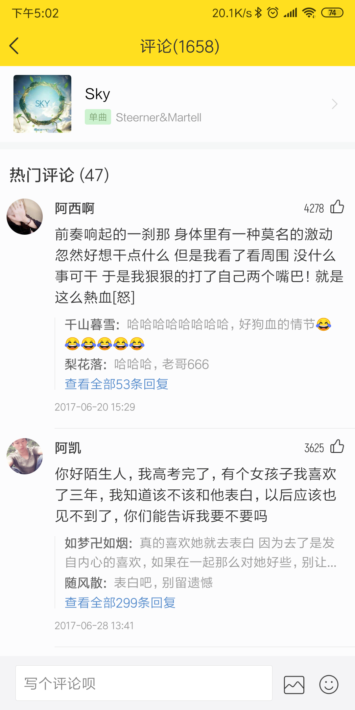
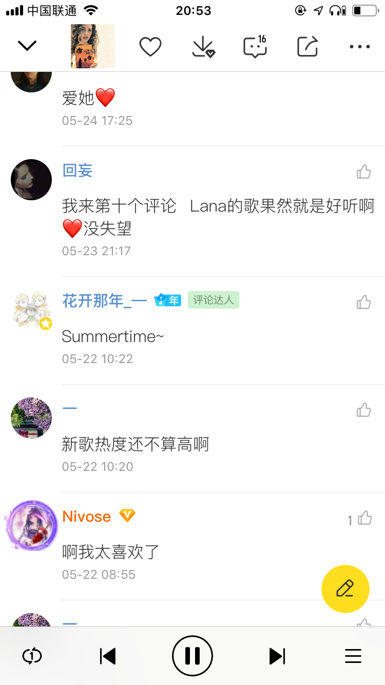

UGC优化-评论
需求背景
评论目前存在以下问题：
1.历史积累评论很多，导致近期产生的优质评论曝光不够，给到近期热衷评论的用户的激励，以及运营有效性都比较弱
2.在评论区内，对于发评论用户->评论达人转化，这一块的引导很弱，导致参与评论的用户感知不到平台内的评论达人权益
需求1：评论增加“最近热门”数据类型
-期望改为：
在评论区顶部区域，增加一个“最近热评”的区域，在该区域内展示“近期发表且点赞数较多的评论”
-原因：
评论存在双重的聚合情况，
1是集中在热门歌曲，
2是集中在歌曲发布初期或者曝光增加的一段时间内，
双重马太效应，导致平台内观看评论的用户，大多数点赞数据都集中在极少数歌曲的热门评论中。
从用户浏览评论角度着想，目前这种情况没有问题，
但是如果是期望运营评论，激励当前活跃用户贡献评论，那么目前这种内容形式，给当前活跃用户的曝光空间太少
-改动如下：
-整体改动：
在评论落地页，顶部区域，展示“近期热评”区域
-近期热评的数据规则：
1.只展示“当前时间——之前7天”内创建的评论
2.当满足条件1的评论，点赞数≥5时，出现“近期热评区”
3.近期热评区，评论一级页展示最多3条评论，二级页面展示全部近期热评
4.点击【查看全部近期热评】时，跳转二级页，展示全部“近期热评”
5.若歌曲最近7天内的评论，没有超过5个赞的，则不展示该区域

近期热评
需求2：评论区，评论达人视觉优化，并增加达人教程跳转
-改动：
在评论区，当用户是“评论达人”身份时，则在用户昵称旁增加一个【评论达人】的特殊标识。
且该达人标识可点击，点击后可跳转“评论达人征集页”
点击后：跳转到“评论达人征集页”（H5，单独提需求开发，主要是图文及加Q群）


